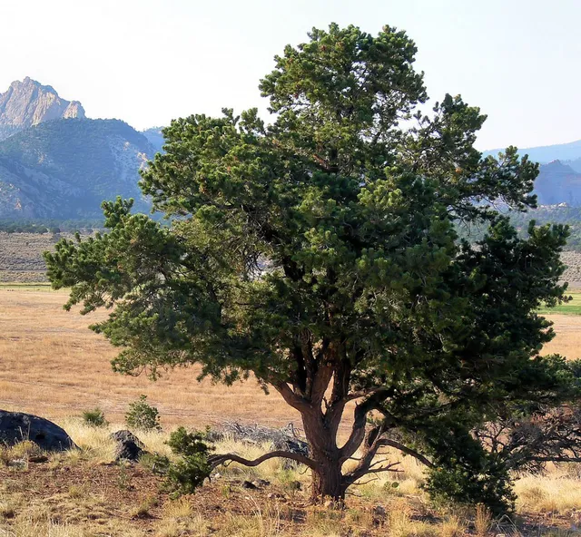

Wild nut · Sep–Oct
Pinyon pine nuts
Pinus edulis
Also called Pine nut, Pinyon
Pinyon pine nuts is a wild nut you can forage from September to October in Southwest and Rocky Mountains. Small bushy pine of dry hills; cones open in autumn to release soft-shelled nuts.

When is pinyon pine nuts in season in the United States?
Pinyon pine nuts is usually in season September to October. Timing shifts with weather, latitude and altitude.
Where does pinyon pine nuts grow in the United States?
Pinyon pine nuts grows in Arizona, Colorado, Idaho, Montana, Nevada, New Mexico, Texas, Utah, Wyoming. Regions: Southwest, Rocky Mountains.
How do you recognise pinyon pine nuts?
Small bushy pine of dry hills; cones open in autumn to release soft-shelled nuts.
How do you harvest pinyon pine nuts?
Gather nuts from the ground once they fall, discarding any with holes or mould. Leave plenty for wildlife, which depends on them for winter.
How do you eat pinyon pine nuts?
Roasted, in pesto, in baking.
How do you store pinyon pine nuts?
Dry; freeze shelled.
What is pinyon pine nuts good for?
Fat, Protein, Calories.